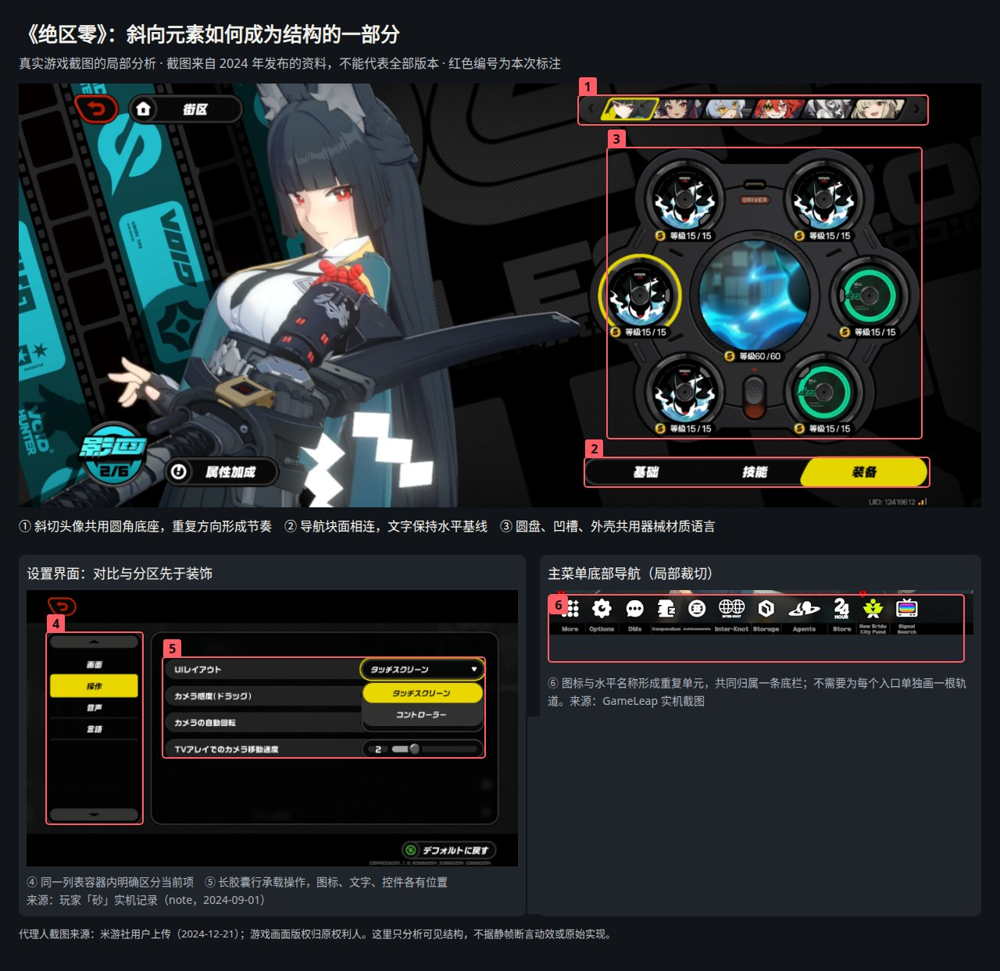

《绝区零》器械拟物 UI 与设备维护签
拆解《绝区零》代理人、设置与主菜单实机界面，提炼适合网页微组件的“共同圆角外壳 + 内部斜切分区 + 水平文字基线 + 微倾角维护签”组织法。
实机界面六区拆解（1–6）· 网页组件转译第一章：设计总览
CHAPTER ONE · 12 SPEC ITEMS (F-01 — F-12)- F-01TYPE
设计类型
以《绝区零》代理人、设置和主菜单实机界面为参考，提炼可用于网页胶囊导航与状态维护签的组件结构。
- F-02STYLE
风格
器械拟物 UI 与都市复古未来感结合，通过圆角外壳、斜切内件与高对比状态建立识别度。
- F-03MOOD
第一印象
控件像装配在同一台实体仪器上，清晰外壳、重复槽位与明暗状态差带来机械装配与操作感。
- F-04GRAMMAR
视觉语言
“共同底座 + 统一倾角斜切分区 + 水平文字基线 + 局部状态高亮”四位一体，绝非孤立装饰斜线。
- F-05LAYOUT
布局构图
主视觉、装备盘位与胶囊导航各有明确容器，靠严格重复对齐规则驾驭局部高密度。
- F-06HIERARCHY
视觉层级
当前功能/角色占据主区，单一整块高对比强调色瞬间定位当前操作项或状态档位。
- F-07COLOR
色彩系统
实机采用黑灰底配白字与荧光黄绿状态块；跨媒介转译时应保留宿主配色体系，避免盲搬大块荧光色。
- F-08TYPEFACE
文字排印
实机偏向粗重无衬线；小尺寸网页端保持水平基线与清晰无衬线字体，避免大角度旋转整段文字。
- F-09SURFACE
形状与材质
圆角外壳包容斜切内件（圆润与斜切共存），靠浅凹槽、边缘反光与微弱纹理建立共同材质。
- F-10GRAPHICS
图像与装饰
头像、驱动盘与功能图标均嵌入实体槽位，装饰依附容器边界，零悬空游离线头。
- F-11MOTION
动态线索
静帧可确认选中态反差，不推断原游戏动效；网页转译可采用 180–260ms 局部扫光与 2–4px 轻位移，点击热区保持静止。
- F-12TAKEAWAY
学习重点
让斜切承担分区而非纯装饰，让微倾维护签（4° Guard Cant）保持水平文字基线，让交互热区始终稳定。
第二章：完整设计分析
CHAPTER TWO · 7 ANALYTICAL MODULES许多界面在借鉴动作游戏视觉时，容易只抄下几道孤立斜线而丢掉秩序感。真正让《绝区零》界面耐看的不是装饰斜线，而是“共同底座里的斜切分区”——代理人顶栏将斜切头像串在同一条圆角容器内，底部“基础／技能／装备”是连续长胶囊配斜向分界，但所有文字仍严守水平阅读基线。
向更克制的网页微组件转译时，这套语法可进一步收敛为“设备维护签（Render Guard）”：一条共享 4° 微上扬斜切（Guard Cant）的单行硬件铭牌，由 SYS 印章、五档离散刻度与状态铭牌组成，既保留器械装配感，又不与主视觉抢焦。

| 编号 | 组件名称 | 所属区域 | 作用 | 可见特征 |
|---|---|---|---|---|
| 01 | 代理人头像带 | 代理人页顶栏 | 多角色切换入口 | 斜切头像重复排列于同一连续圆角底座中，当前项描边突出 |
| 02 | 基础／技能／装备 | 右侧功能区 | 页面内分段导航 | 连续胶囊容器、斜向分界线、水平文字基线与单一亮色选中块 |
| 03 | 驱动盘装置 | 装备面板 | 承载核心装备槽位 | 圆形盘位环绕中心，共用实体外壳与凹槽材质 |
| 04 | 设置类别列表 | 设置外框左侧 | 一级类别切换 | 严格对齐的行与分隔，当前行用整块高亮色区分 |
| 05 | 设置操作行 | 设置内容面板 | 参数开关与选择 | 长胶囊行约束图标/文字/控件位置，局部状态色精准覆盖控件区 |
| 06 | 主菜单功能带 | 屏幕底部 | 全局功能直达 | 图标与水平名称重复成组并共享一条底栏，无悬空独立轨道 |
STYLE · 风格与流派
器械拟物 UI（Device-inspired UI）与都市复古未来感（Urban Retrofuturism），以实体影音/仪器装配逻辑组织数字控件。
TECHNIQUE · 视觉技法
斜切分段导航（Oblique Segmented Navigation）、容器共属（Common Region）、水平文字基线与 4° 共享微斜切维护签。
MOOD · 情绪氛围
紧凑、机械、利落，克制地传达“正在精密运转的实体设备”气质。
推荐检索组合：Zenless Zone Zero agent menu UI · device inspired segmented controls oblique · industrial hardware faceplate micro indicator UI
点击热区与动效解耦：悬停或聚焦时，反光与内容轻移（2–4px，180–260ms 可中断回退）只作用于内部绘制层，至少 44px 高的命中区域必须纹丝不动，防止边缘抖动与误触。
状态铭牌的诚实度原则：五档离散刻度适合表达清晰的状态档位，避免为了“像科幻仪器”而伪造无依据的百分比数值或持续频闪动效。
借鉴《绝区零》的器械拟物 UI 组织语法，为安静的网页界面设计紧凑型胶囊导航卡片与工业硬件风状态维护签（不照搬游戏贴图与高饱和荧光大色块）。 【继承的结构语法】 - 容器共属（Common Region）：将相关导航入口放进同一个圆角外壳与浅凹槽内；内部仅使用单一统一倾角（相对竖直 12–18°）的斜切分界线，且两端精准闭合在凹槽上下边缘，严禁出现悬空装饰线头。 - 斜切与水平共存：外框与分区边界承载方向性斜切，而图标、标签文字（12–13px）与交互热区始终保持水平基线与清晰可读。 - 设备维护签（Render Guard）：在角落或页脚细线之上布置单行硬件铭牌，由 SYS 印章、五档离散状态刻度与状态铭牌组成，共享统一 4° 微上扬斜切（Guard Cant），内部文字仍保持水平基线。 【材质与交互反馈】 - 将游戏中的高对比选中块转译为克制的宿主同色系局部材质扫光：静置时稳定不抢焦；悬停或键盘聚焦时在 180–260ms 内完成局部反光掠过与 2–4px 轻位移，移开可随时平滑回退；Reduced Motion 模式下仅保留静态高亮。 - 命中热区高度不低于 44px 且在动效期间保持绝对静止；不伪造无实测依据的百分比进度条，不加入持续闪烁动画。 【验收标准】 - 在 320 / 390 / 768 / 1440px 视口下无悬空线头、无文字碰撞或横向溢出；键盘焦点与触屏操作体验一致；在深蓝与暖金等不同明暗宿主背景上均具备良好可读性。